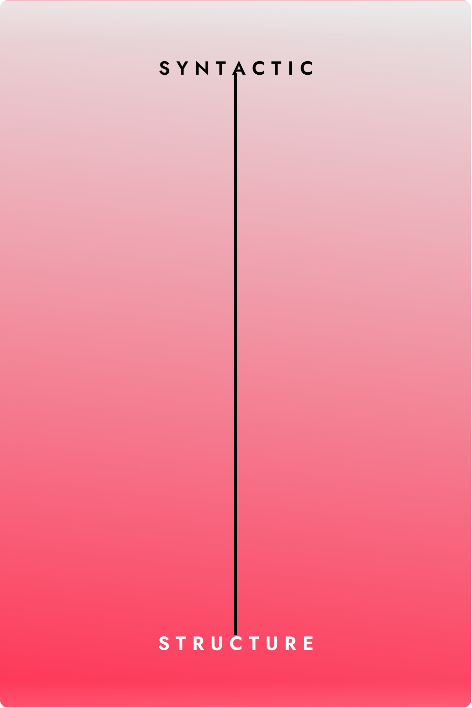
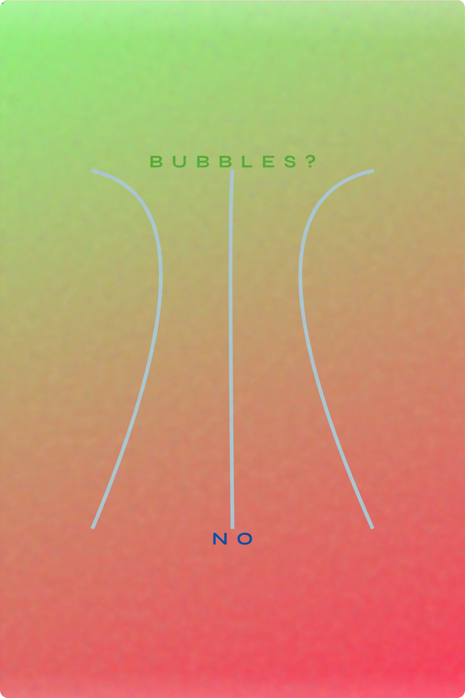
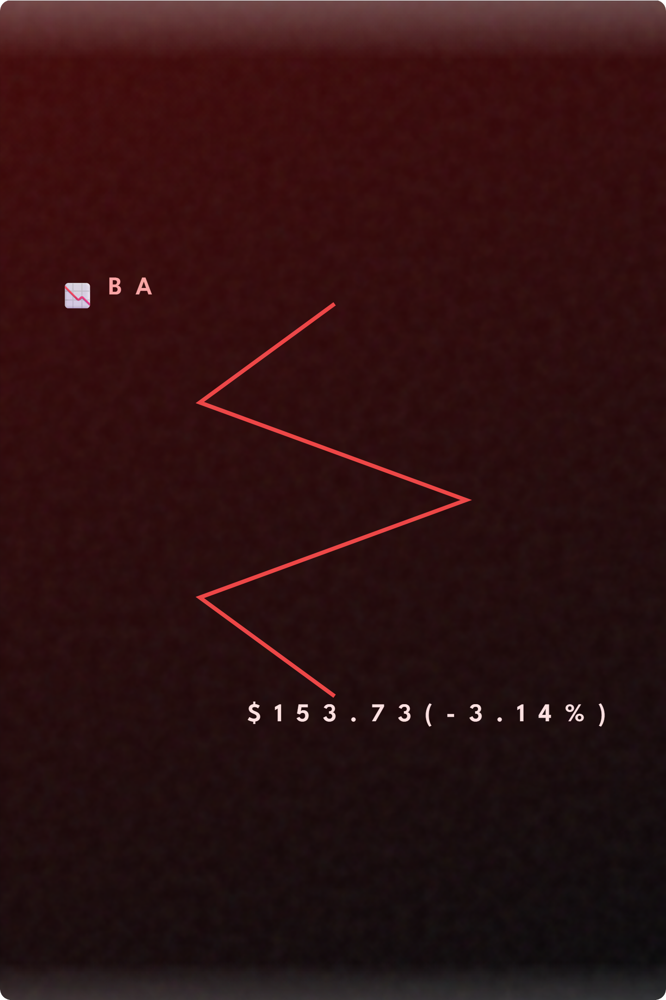
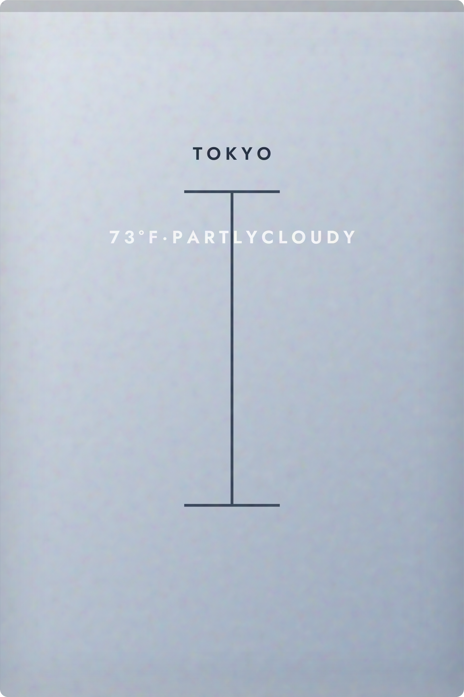
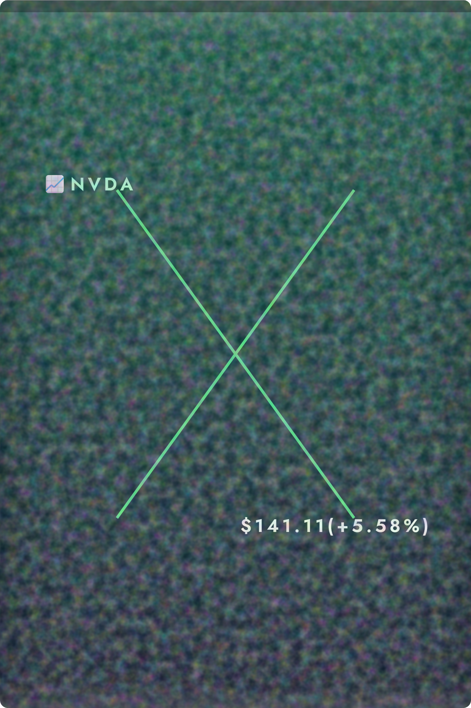

Compared to the first version of the Poster Generator, I think the current version definitely looks a lot better in terms of the UI and the outputs that are generated. I’ve kept most of the features in the first version and only added some that I think will enhance the user’s experience: canvas zoom in/out, exporting, exploring variations of their current poster, color changes/palettes, canvas sizes, and image file uploads. I think the most difficult process was to get the image file to be set as the canvas if desired. Apparently, the code only pasted the image that was set as its preview size instead of fitting to canvas size or becoming the canvas; only after a long conversation with Gemini was I able to get a satisfactory result.
If I ask AI to create, or generate something, AI only understands it at a vague level. In order to get it to create something that is satisfactory with what you desire, you have to be more specific or at least provide some examples of what you want it to do. This is the situation of the “How to create a peanut butter sandwich” experiment - with the person (as an ai) accomplishing the user’s commands at the simplest level. I believe there can be some more work to be done. In regards to a “poster generator,” I think the current version satisfies the concept quite well and the only improvements that can be made are mostly niche or based on my preference(s). As a custom tool, there can be infinitely much “work” that can be done to the generator. Although the idea has to come to mind first, the generator has great potential to accomplish multiple things.
Concluding my thoughts about the overall process of creating a generator using AI, I believe that it has great potential to do amazing things. What AI has shown me so far was beyond my expectations, especially when comparing it to what it could accomplish just a few years ago. It has made the process of building a custom software so much easier, yet also very frustrating, and quicker compared to when done by hard coding. AI has taught me that as long as there is a thought or desire, AI can probably generate/produce it, if not resemble the idea to an extent. The only limit of creating custom software is the user’s imagination - and probably the AI’s understanding of the idea.